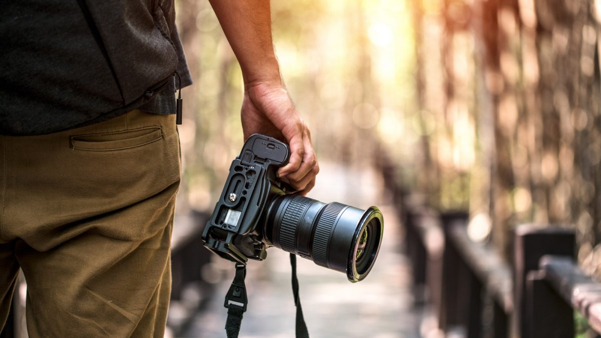

Fotoğrafçılık Hobi Sitemize Hoş Geldiniz!
Fotoğrafçılık, anılarımızı ölümsüzleştirmenin ve güzel kareler yakalamanın keyifli bir yoludur. Bu site, fotoğrafçılık hakkında bilgi edinmek ve becerilerinizi geliştirmek için tasarlanmıştır.
Temel Fotoğrafçılık Terimleri
- Diyafram: Objektifteki açıklık ayarını kontrol eder, fotoğrafın ne kadar ışık alacağını belirler.
- Enstantane Hızı: Objektifin önündeki perdenin ne kadar süreyle açık kalacağını belirler, hareketli ve net fotoğraflar çekmek için önemlidir.
- ISO: Dijital kamera sensörünün ışığı ne kadar iyi yakalayacağını belirler, düşük ışıklı ortamlarda kullanışlıdır ancak fotoğrafta kumlanma yapabilir.
- Odak Noktası: Fotoğraf makinesinin odaklandığı alanı belirler, doğru odaklanma net ve güzel fotoğraflar elde etmek için önemlidir.
Fotoğrafçılık Tüyoları
Birkaç temel tüyo ile fotoğrafçılık becerilerinizi geliştirebilirsiniz:
- Doğru Işık Kullanımı: Fotoğrafın kalitesi için doğru ışık çok önemlidir, farklı ışık koşullarında denemeler yaparak en iyi sonucu alabilirsiniz.
- Kompozisyon Kuralları: Çektiğiniz fotoğraflarda nesneleri doğru bir şekilde konumlandırarak daha etkileyici görüntüler elde edebilirsiniz. Üçüncüler Kuralı, Çizgi Kullanımı gibi temel kompozisyon kurallarını öğrenmek faydalı olacaktır.
- Odak Noktası Belirleme: Fotoğrafın ana odak noktasını belirlemek, izleyicinin dikkatini çekmek için önemlidir. Fotoğrafın konusunu vurgulamak için kullanılabilir.
- Renk ve Kontrast Dengesi: Fotoğraflarınızın renkleri ve kontrastı doğru ayarlanmış olmalıdır, bunun için fotoğraf düzenleme programları kullanabilirsiniz.